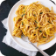
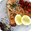

<section class="popular-recipe">
    <div class="popular-container">
        <h3 class="popular-title">POPULAR RECIPES</h3>
        <ul class="popular-list">
            <li class="popular-item">
                
                <div>
                    <h4 class="popular-item-title">FRENCH OMELETTE</h4>
                    <p class="popular-item-text">
                        A French omelette is a simple yet elegant dish made with whisked eggs, butter, salt, and pepper, cooked gently until light and fluffy, then folded over and served for a comforting and refined meal any time of day.
                    </p>
                </div>
            </li>
            <li class="popular-item">
                
                <div class="popular-item-container">
                    <h4 class="popular-item-title">SQUASH LINGUINE</h4>
                    <p class="popular-item-text">
                        Squash linguine is a flavorful and nutritious pasta alternative made with spiralized squash noodles, paired with a variety of delicious sauces and toppings for a satisfying and healthy meal.
                    </p>
                </div>
            </li>
            <li class="popular-item popular-item-34">
                
                <div class="popular-item-container">
                    <h4 class="popular-item-title">BAKED SALMON</h4>
                    <p class="popular-item-text">
                        Baked salmon is a flavorful and nutritious dish featuring tender and moist fillets seasoned with a blend of lemon juice, garlic, and olive oil.
                    </p>
                </div>
            </li>
            <li class="popular-item popular-item-34">
                
                <div class="popular-item-container">
                    <h4 class="popular-item-title">SUGAR PIE</h4>
                    <p class="popular-item-text">
                        Sugar pie is a traditional Canadian dessert made with a rich and buttery filling of brown sugar, cream, and flour, poured into a flaky pastry crust and baked until golden brown.
                    </p>
                </div>
            </li>
        </ul>
    </div>
</section>